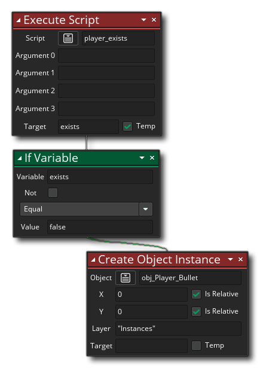

Eine der Ressourcen im Ressourcenbaum ist die Skript- Ressource. Skripts sind einfache Code-Blöcke oder DnD™ -Aktionen, die ausgeführt werden, als wären sie eine der eingebauten Funktionen oder Aktionen von GameMaker Studio 2. Wir haben einen ganzen Abschnitt des Handbuchs zum Schreiben von Skripten mit Code ( hier ), aber Sie können Skripte auch nur mit den Drag & Drop-Aktionen erstellen.
Ein DnD™ Skript (wie jede integrierte Aktion DnD™) können verschiedene Werte annehmen (oder gar keine), und dann eine Kette von Aktionen ausführen und entweder einen Wert zurückgeben oder nichts zurückgeben, und Sie würden es die Verwendung rufen Script ausführen  Aktion, die so aussieht:
Aktion, die so aussieht:  Die Eingabevariablen werden als Argumente bezeichnet, und Sie können bis zu 4 davon mit dieser Aktion angeben (obwohl Sie alle, einige oder keine davon verwenden können, je nachdem, was Sie für das Skript benötigen), aber Sie können auch den Ausführungscode verwenden
Die Eingabevariablen werden als Argumente bezeichnet, und Sie können bis zu 4 davon mit dieser Aktion angeben (obwohl Sie alle, einige oder keine davon verwenden können, je nachdem, was Sie für das Skript benötigen), aber Sie können auch den Ausführungscode verwenden  Um das Skript aufzurufen, kann Ihr Skript entweder bis zu 16 Argumente haben (bei Verwendung des argument0 ... argument15 Variablen) oder so viele Argumente wie nötig (bei Verwendung der argument[n] Array):
Um das Skript aufzurufen, kann Ihr Skript entweder bis zu 16 Argumente haben (bei Verwendung des argument0 ... argument15 Variablen) oder so viele Argumente wie nötig (bei Verwendung der argument[n] Array): 
Um ein DnD™ -Skript zu erstellen, verwenden Sie einfach die rechte Maustaste  auf der Skript-Ressource und wählen Sie Erstellen. Dadurch wird ein neues DnD™ -Skript erstellt und das Editorfenster geöffnet:
auf der Skript-Ressource und wählen Sie Erstellen. Dadurch wird ein neues DnD™ -Skript erstellt und das Editorfenster geöffnet: 
Sie können das Skript benennen, indem Sie mit der rechten Maustaste klicken  Klicken Sie darauf im Ressourcenbaum und wählen Sie Umbenennen (oder verwenden Sie einen langsamen Doppelklick mit der linken Maustaste
Klicken Sie darauf im Ressourcenbaum und wählen Sie Umbenennen (oder verwenden Sie einen langsamen Doppelklick mit der linken Maustaste  ), Aber beachten Sie, dass der Name des Skriptes auf die Skriptregeln für Funktionen entsprechen müssen, so müssen sie mit einem Buchstaben beginnen und nur Buchstaben, Zahlen oder die „_“ Unter bar Symbol enthalten.
), Aber beachten Sie, dass der Name des Skriptes auf die Skriptregeln für Funktionen entsprechen müssen, so müssen sie mit einem Buchstaben beginnen und nur Buchstaben, Zahlen oder die „_“ Unter bar Symbol enthalten.
Wie bereits erwähnt, können Sie einem Skript eine Reihe von Argumenten übergeben, die dann die Aufgabe ausführen, für die Sie es geschrieben haben. Um dies besser zu verstehen, nehmen Sie zum Beispiel eine Aktion und denken darüber nach, wie es funktioniert... Sie platzieren es in ein Ereignis und spezifizieren eine Anzahl von Parametern und es wird Ihre Instanz dazu bringen, etwas zu tun. Skripte sind genau gleich, mit dem einzigen Unterschied, dass Sie sie schreiben. Das folgende Bild zeigt ein einfaches DnD™ -Skript, das ein einzelnes Argument verwendet und eine Anzahl von Instanzen an zufälligen Positionen innerhalb eines Raums erstellt:
Beachten Sie, dass wir den Wert zuweisen argument0 zu einer temporären Variable am Anfang. Alle Werte, die an ein Skript übergeben werden, erhalten die folgenden integrierten Variablen:
argument0, argument1, ..., etc... up to argument15
Sie können direkt auf diese integrierten Argumentvariablen zugreifen oder sie temporären (lokalen) Variablen zuweisen, wie wir es im obigen Beispiel getan haben (die Verwendung temporärer Variablen macht es einfacher, dem zu folgen, was jeder tut und wird empfohlen). Im obigen Skript ist der Wert für argument0 wird verwendet, um die Anzahl der Male zu bestimmen repeat Schleife wird ausgeführt, und Sie würden das Skript wie folgt aufrufen:
Sie können nicht nur Argumente in ein Skript übergeben, sondern Sie können auch ein Skript dazu auffordern, einen Wert zurückzugeben (mithilfe der Eingabetaste)  action), so dass Sie diese zum Beispiel zum Erstellen von Berechnungsmethoden oder zum Zurückgeben einer Instanz-ID nach einer komplexen Kollisionserkennung oder einer beliebigen Anzahl von Dingen verwenden können. Beachten Sie jedoch, dass die Verwendung von return das Skript beendet und keine Aktionen nach der Ausführung ausgeführt werden. Dies bedeutet, dass Sie sich Gedanken darüber machen müssen, wie Ihre Skripts strukturiert sind.
action), so dass Sie diese zum Beispiel zum Erstellen von Berechnungsmethoden oder zum Zurückgeben einer Instanz-ID nach einer komplexen Kollisionserkennung oder einer beliebigen Anzahl von Dingen verwenden können. Beachten Sie jedoch, dass die Verwendung von return das Skript beendet und keine Aktionen nach der Ausführung ausgeführt werden. Dies bedeutet, dass Sie sich Gedanken darüber machen müssen, wie Ihre Skripts strukturiert sind.
Unten ist ein Drag & Drop-Skript, das einen Wert zurückgibt: 
Das obige Skript überprüft einfach alle Instanzen in einem Raum, um zu sehen, was sie tun object_index ist und wenn einer von ihnen das Spielerobjekt ist, wird das Skript zurückkehren true (Beenden des Skripts) oder false. Sie würden dieses Skript so nennen:  Also rufen wir das Skript auf und lassen es eine temporäre (lokale) Variable erzeugen, um den zurückgegebenen Wert zu speichern (was in diesem Fall entweder der Fall ist) true oder false ), und dann wird diese Variable überprüft und eine Aktion ausgeführt.
Wenn Sie Ihre DnD™ -Skripte erstellen, können Sie dieselben Aktionen ausführen wie beim Hinzufügen von Aktionen zu einem Objektereignis. Sie können sogar Skripte innerhalb von Skripten aufrufen und auf diese Weise mehr "modularen" Aktionscode erstellen. Skripte, die auf diese Weise erstellt wurden, können Ihnen viel Zeit beim Erstellen der gleichen Action-Sequenzen sparen und dazu beitragen, dass Ihre Action-Sequenzen leichter zu lesen und leichter zu debuggen sind.